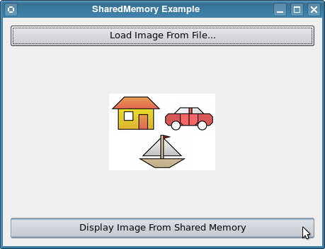

IPC: Shared Memory
Demonstrates how to share image data between different processes using the Shared Memory IPC mechanism.
The Shared Memory example shows how to use the QSharedMemory class to implement inter-process communication using shared memory. To build the example, run make. To run the example, start two instances of the executable. The main() function creates an application and an instance of our example's Dialog class. The dialog is displayed and then control is passed to the application in the standard way.
int main(int argc, char *argv[]) { QApplication application(argc, argv); Dialog dialog; dialog.show(); return application.exec(); }
Two instances of class Dialog appear.

Class Dialog inherits QDialog. It encapsulates the user interface and an instance of QSharedMemory. It also has two public slots, loadFromFile() and loadFromMemory() that correspond to the two buttons on the dialog.
class Dialog : public QDialog { Q_OBJECT public: Dialog(QWidget *parent = nullptr); public slots: void loadFromFile(); void loadFromMemory(); private: void detach(); private: Ui::Dialog ui; QSharedMemory sharedMemory; };
The constructor builds the user interface widgets and connects the clicked() signal of each button to the corresponding slot function.
Dialog::Dialog(QWidget *parent) : QDialog(parent), sharedMemory(QNativeIpcKey(u"QSharedMemoryExample"_s)) { ui.setupUi(this); connect(ui.loadFromFileButton, &QPushButton::clicked, this, &Dialog::loadFromFile); connect(ui.loadFromSharedMemoryButton, &QPushButton::clicked, this, &Dialog::loadFromMemory); setWindowTitle(tr("SharedMemory Example")); }
Note that "QSharedMemoryExample" is passed to the QSharedMemory() constructor to be used as the key. This will be used by the system as the identifier of the underlying shared memory segment.
Click the Load Image From File... button on one of the dialogs. The loadFromFile() slot is invoked. First, it tests whether a shared memory segment is already attached to the process. If so, that segment is detached from the process, so we can be assured of starting off the example correctly.
void Dialog::loadFromFile() { if (sharedMemory.isAttached()) detach(); ui.label->setText(tr("Select an image file")); QString fileName = QFileDialog::getOpenFileName(0, QString(), QString(), tr("Images (*.png *.xpm *.jpg)")); QImage image; if (!image.load(fileName)) { ui.label->setText(tr("Selected file is not an image, please select another.")); return; } ui.label->setPixmap(QPixmap::fromImage(image));
The user is then asked to select an image file using QFileDialog::getOpenFileName(). The selected file is loaded into a QImage. Using a QImage lets us ensure that the selected file is a valid image, and it also allows us to immediately display the image in the dialog using setPixmap().
Next the image is streamed into a QBuffer using a QDataStream. This gives us the size, which we then use to create() our shared memory segment. Creating a shared memory segment automatically attaches the segment to the process. Using a QBuffer here lets us get a pointer to the image data, which we then use to do a memcopy() from the QBuffer into the shared memory segment.
// load into shared memory
QBuffer buffer;
buffer.open(QBuffer::ReadWrite);
QDataStream out(&buffer);
out << image;
int size = buffer.size();
if (!sharedMemory.create(size)) {
if (sharedMemory.error() == QSharedMemory::AlreadyExists) {
sharedMemory.attach();
} else {
ui.label->setText(tr("Unable to create or attach to shared memory segment: %1")
.arg(sharedMemory.errorString()));
return;
}
}
sharedMemory.lock();
char *to = (char*)sharedMemory.data();
const char *from = buffer.data().data();
memcpy(to, from, qMin(sharedMemory.size(), size));
sharedMemory.unlock();
}
Note that we lock() the shared memory segment before we copy into it, and we unlock() it again immediately after the copy. This ensures we have exclusive access to the shared memory segment to do our memcopy(). If some other process has the segment lock, then our process will block until the lock becomes available.
Note also that the function does not detach() from the shared memory segment after the memcopy() and unlock(). Recall that when the last process detaches from a shared memory segment, the segment is released by the operating system. Since this process only one that is attached to the shared memory segment at the moment, if loadFromFile() detached from the shared memory segment, the segment would be destroyed before we get to the next step.
When the function returns, if the file you selected was qt.png, your first dialog looks like this.

In the second dialog, click the Display Image From Shared Memory button. The loadFromMemory() slot is invoked. It first attaches the process to the same shared memory segment created by the first process. Then it locks the segment for exclusive access and links a QBuffer to the image data in the shared memory segment. It then streams the data into a QImage and unlocks the segment.
void Dialog::loadFromMemory() { if (!sharedMemory.attach()) { ui.label->setText(tr("Unable to attach to shared memory segment.\n" \ "Load an image first.")); return; } QBuffer buffer; QDataStream in(&buffer); QImage image; sharedMemory.lock(); buffer.setData((char*)sharedMemory.constData(), sharedMemory.size()); buffer.open(QBuffer::ReadOnly); in >> image; sharedMemory.unlock(); sharedMemory.detach(); ui.label->setPixmap(QPixmap::fromImage(image)); }
In this case, the function does detach() from the segment, because now we are effectively finished using it. Finally, the QImage is displayed. At this point, both dialogs should be showing the same image. When you close the first dialog, the Dialog destructor calls the QSharedMemory destructor, which detaches from the shared memory segment. Since this is the last process to be detached from the segment, the operating system will now release the shared memory.